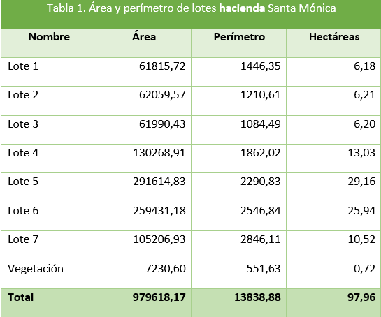
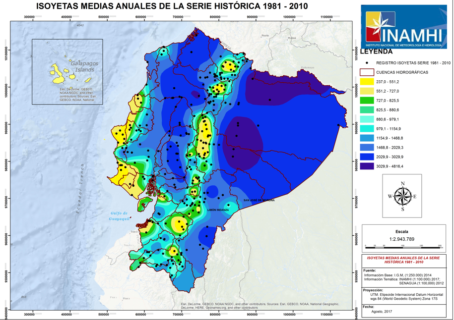
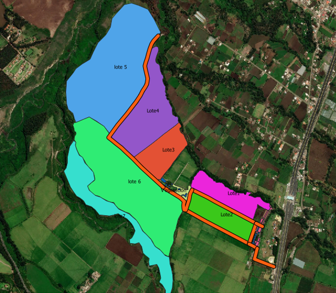
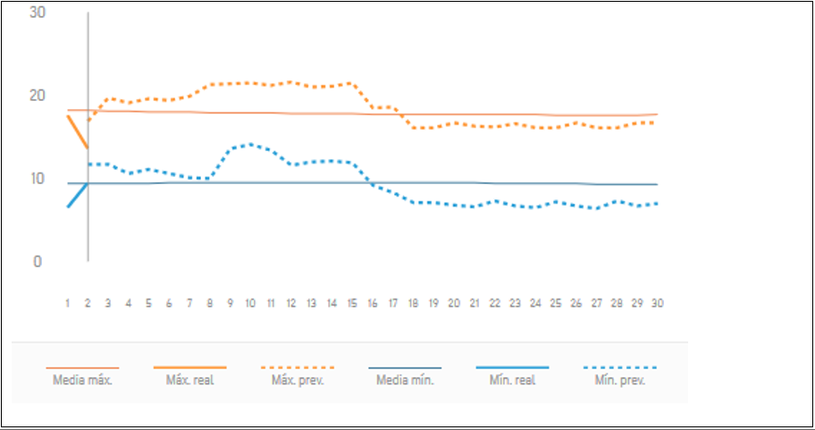
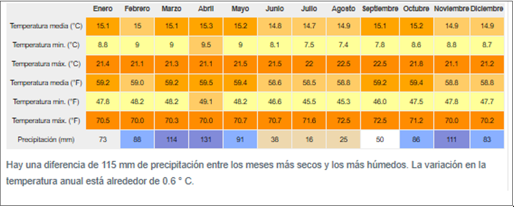

La Universidad Técnica del Norte como muchas Instituciones tecnológicas y educativas cuentan con escenarios tanto deportivos, culturales, agropecuarios, académicos, de investigación y tecnológicos. Uno de los escenarios que destaca en la UTN es la hacienda Santa Mónica con un perímetro de 106.7 hectáreas mismo que en la actualidad son destinados a la siembra de pastizales y forrajes alrededor de 160 vacas lecheras. La hacienda Santa Mónica es considerado como uno de los tantos terrenos que se encuentran en las vías panamericanas y no son ubicadas en la georreferencia global, dado este problema se considera establecer puntos de referencias geográfica tanto como vías, predios, calles, terrenos y todo el área y perímetro relacionado a la hacienda. La Hacienda ha enfrentado diversos cambios desde la adjudicación del 7 de julio del 2011, estos cambios han constituido una mejora continua que han sido favorecidas por factores internos como externos, además de ello se ha aprovechado de la infraestructura, maquinarias y equipo, clientes, procesos e imagen corporativa dejadas por el anterior dueño de la Hacienda, en esencia referente a la calidad lechera y especie de ganado vacuno existente. (CARVAJAL, 2015) La extensiva área de la hacienda promueve la referenciación de diferentes terrenos ya que el área es calculada por hectáreas y un 90% agrícola que por ende permite el crecimiento de vacas y producción de leche.
El uso actual de la Tierra es de altura con riego, exclusivamente para Pastoreo Controlado o Rotativo Intensivo de Vacunos. La frecuencia de permanencia del ganado en un solo lugar depende de la existencia y calidad del pasto. La predominancia de uso pastoril se encuentra en los extremos sur oeste y sur este del área de estudio, particularmente, en las partes bajas y en laderas donde se hallan establecidos importantes hatos de ganado vacuno. El área de estudio se encuentra en combinación con áreas en descanso destinadas a pastoreo en el extremo sur (lote 5, 6 y 7), donde los vacunos son pastoreados en redileo .
De acuerdo con el estudio de la Zonificación Agroecológica del área de estudio comprendido entre Pinsaquí y peaje de San Roque, se han identificado problemas, tales como heladas, granizadas, sequías, las cuales dificultan el desarrollo de los cultivos ocasionando cuantiosas pérdidas, especialmente en la hacienda que requiere para el pastoreo debido a su dedicación a la producción lechera.
El área de estudio se encuentra en el sector de Ilumán perteneciente al cantón Otavalo, a 100 metros del peaje de San Roque, ubicado en -78.24360 de longitud este y 0.28810 de latitud norte Esta hacienda está localizada principalmente en laderas, y se extiende en la parte central y sur del área de estudio. Abarca los siete lotes según muestra la figura 2. y el cuadro 1. que indica el área y perímetro de cada uno.
El clima del área de estudio corresponde a ecuatorial mesotérmico semi húmedo, con variaciones extremas entre el día y la noche, cuya temperatura media anual promedio es de aproximadamente de 15ºC, siendo la mínima promedio de 9ºC y máxima de 20ºC, ver figura 3. Por su situación geográfica y altura, recibe una mayor cantidad de energía solar que una superficie similar ubicada a nivel del mar. Por su ubicación en la latitud cero, permite que la irradiación solar global alcance valores elevados durante todo el año, con un promedio anual de 533 cal/cm2/día.
La pluviométrica media anual en esta región es de 852,8 mm (INAMHI, 2018), distribuida en dos épocas de lluvias (enero a junio y septiembre a diciembre), los meses secos se presentan en julio y agosto; la humedad relativa entre 65 y 85% (INAMHI, 2018), no obstante, también existen sectores con baja humedad. La velocidad del viento promedio es de 3 km/h. El mes más seco es julio, con 16 mm de lluvia, y abril es el mes más cálido del año, y julio es el mes más frío del año.
